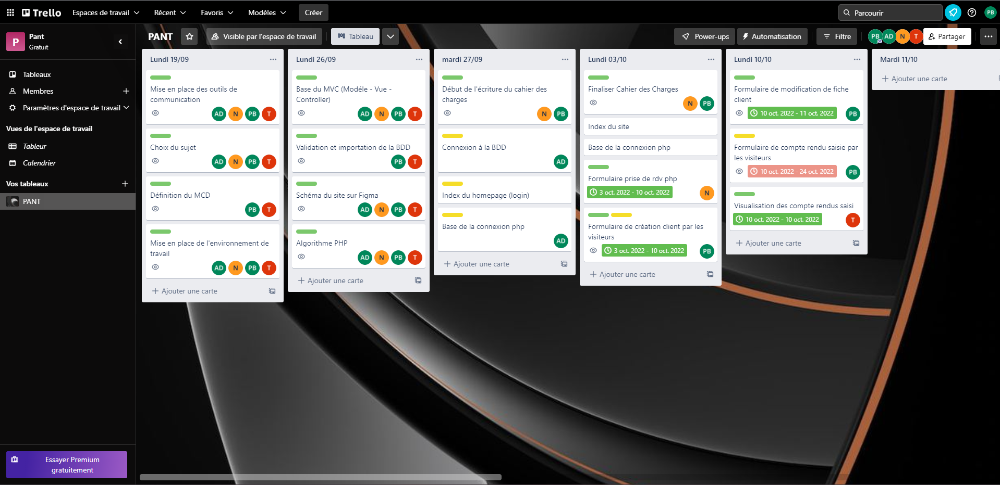
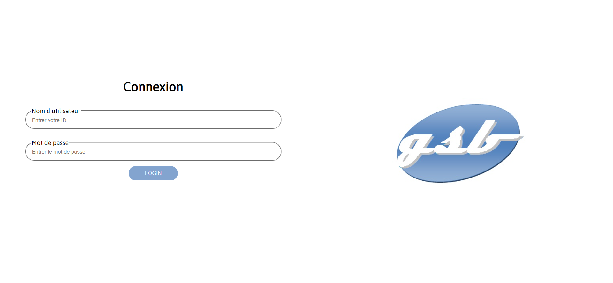
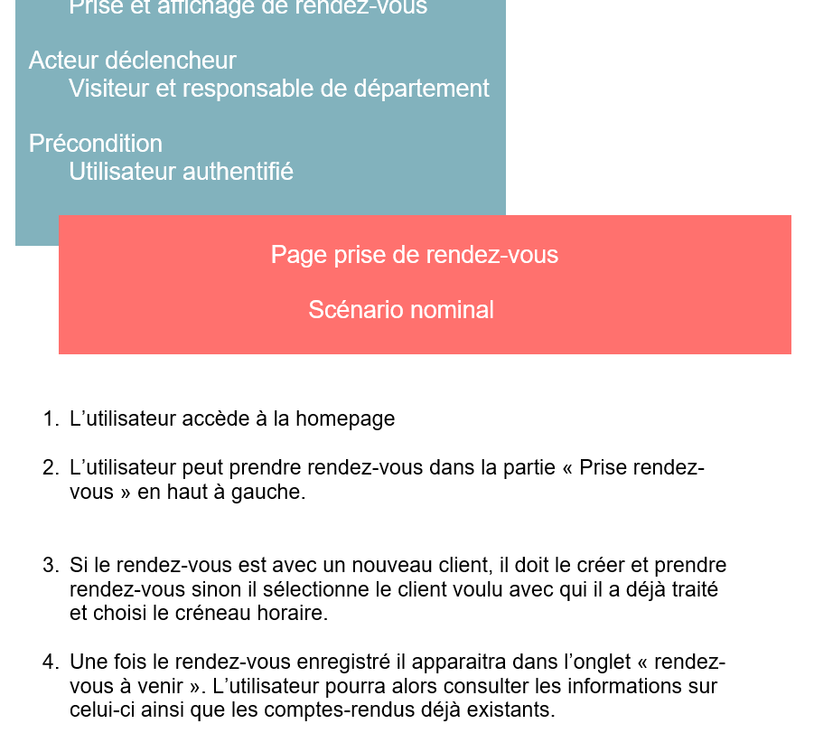

ANDROID

Le projet android est le deuxième projet en groupe de programmation que nous avons sur la seconde année.
Elle est la suite logique de notre application WEB.


TODO DESCRIP
TODO DESCRIP

TODO DESCRIP
Compétences
Gérer le patrimoine informatique:

- Vérifier les niveaux d’habilitation associés à un service est vérifié car en fonction du poste, la page affichée va différer ainsi que les droits et leurs actions.
- Vérifier le respect des règles d’utilisation des ressources numériques, des outils tels que "htmlspecialchar" des vérifications de session... sont mises en place pour vérifier le droit d'accès aux ressources.
Travailler en mode projet :
-Analyser les objectifs et les modalités d’organisation d'un projet, grâce à l'étude du cahier des charges (3 types d'utilisateurs), les besoins de l'application (prise de rendez-vous, compte rendu...)
-Planifier les activités grâce à divers outils de communication tels que microsoft teams, discord
-Évaluer les indicateurs de suivi d’un projet et analyser les écarts grâce à trello ainsi que github permettant de savoir qui a fini sa tâche et quelles modifications ont été effectuées et sur quel fichier
Répondre aux incidents et aux demandes d’assistance et d’évolution :
- Traiter des demandes concernant les applications car au fur et à mesure, notre professeur demandait de nouvelles fonctionnalités qui ont été ajoutées (comme la validation des comptes rendus) ainsi que le document explicatif sur comment se servir de notre application.
Développer la présence en ligne de l’organisation :
- Participer à l’évolution d’un site Web exploitant les données de l’organisation. Notre site web même s'il ne devait pas être relié au site de l'entreprise devait correspondre a celui-ci (à partir du logo).
Mettre à disposition des utilisateurs un service informatique :
- Déployer un service. L'outil github pour le mettre en place puis pour sa mise en ligne.
- Accompagner les utilisateurs dans la mise en place d’un service grâce à la fiche descriptive du projet qui donne un support d'information et le service déployé est opérationnel.
Organiser son développement professionnel :

- Mettre en place son environnement d’apprentissage personnel en se formant tout le long du projet notament avec divers techniques (architecture MVC, GITHUB, commande SQL...)